ระบบจำลองห้องเล่นและวิเคราะห์เด็คการ์ดแบบเรียลไทม์บนคลาวด์ สถาปัตยกรรม Lean Multi-AZ VPC, Application Load Balancer (ALB) และ Auto Scaling Group (ASG)
การทลายข้อจำกัดของการเล่นการ์ดกายภาพ สู่การจำลองระบบคลาวด์สมรรถนะสูงความหน่วงต่ำ
การ์ดของแท้ระดับหายาก (Legendary/Enchanted) มีมูลค่าสูงมากในตลาดรอง และการนัดหมายเล่นต้องใช้เวลาและสถานที่ตรงกัน ทำให้ผู้เล่นใหม่ขาดโอกาสในการทดลองจัดเด็คและทดสอบคอมโบการ์ด
แพลตฟอร์มจำลองทั่วไปมักสื่อสารด้วย HTTP Polling แบบดั้งเดิม ซึ่งมี Request Overhead สูงและหน่วงเกิน 300ms ไม่ตอบสนองต่อเกมผลัดตาที่ต้องเห็นการหมุนการ์ดและเปลี่ยนคะแนนในทันที
ระบบเดิมใช้ Dedicated Virtual Machine เปิดทิ้งไว้ 24/7 ทำให้ค่าใช้จ่ายสูงแม้ไม่มีผู้ใช้งาน และมักเกิด System Outage เมื่อมีผู้เล่นเข้ามาพร้อมกัน จึงต้องออกแบบสถาปัตยกรรมที่ปรับขนาดได้อัตโนมัติ
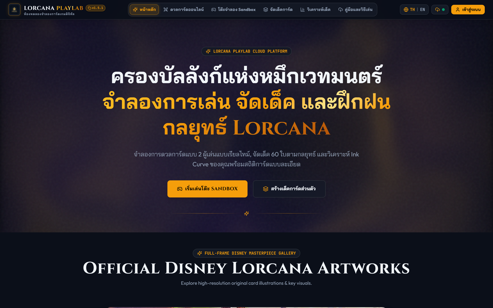
การวางกรอบทางวิศวกรรมเพื่อมอบประสบการณ์ฝึกซ้อมระดับแข่งขันและการควบคุมงบประมาณ
LC-01 ยืนยันตัวตน JWT • LC-02 Session Management • LC-03 คลังการ์ดและจัดเด็ค (กติกา 60 ใบ / ไม่เกิน 4 ซ้ำ / 2 สี) • LC-04 Booster Gacha • LC-05 3D Holographic Card • LC-06 Lobby จับคู่ 6 หลัก • LC-07 Interactive Playmat • LC-08 Rejoin Grace Period 60s • LC-09 คืนห้องเล่น
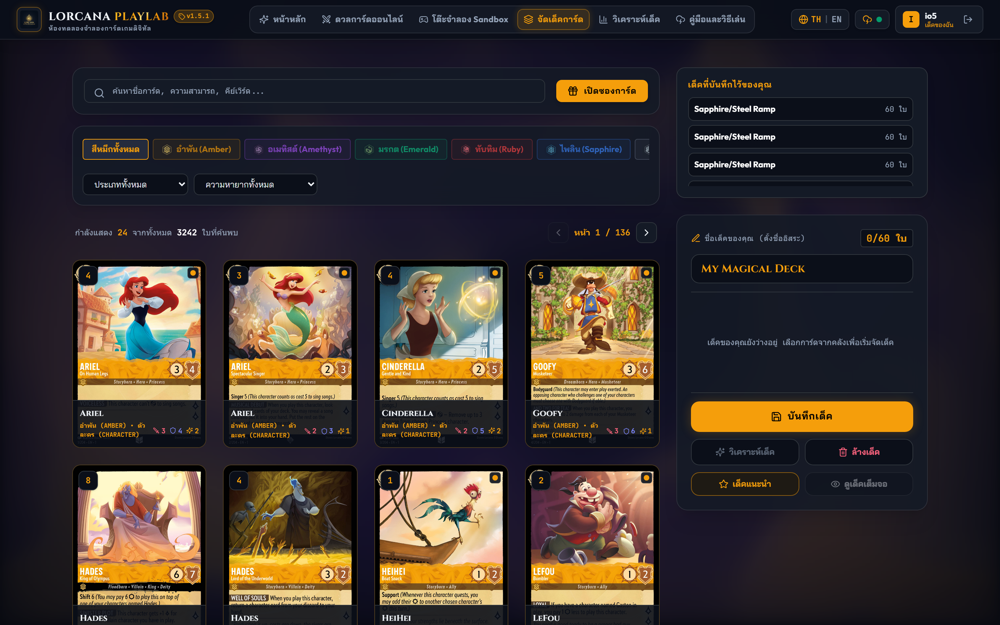
การวางรากฐานด้าน Distributed Systems, Network Optimization และความสอดคล้องของข้อมูล
ผสานข้อดีระหว่าง Primary IaaS Stack (EC2 Auto Scaling Group บน Multi-AZ VPC สำหรับ Stateful WebSocket) ร่วมกับ Secondary Serverless Stack (DynamoDB & S3) ป้องกัน Single Point of Failure (SPOF)
แทนที่ HTTP Polling ที่มี Header Overhead สูง ด้วย Full-Duplex TCP Connection ที่มี Frame Overhead เพียง 2–10 Bytes ลดทราฟฟิกเครือข่ายลง 85% และทำให้ Latency บนกระดานต่ำกว่า 50 มิลลิวินาที
หน้าจอไคลเอนต์เรนเดอร์การขยับการ์ดและเปลี่ยนแต้ม Lore ทันทีใน 0ms ขณะเดียวกันส่ง Action Payload ผ่าน WebSocket ไปซิงค์คู่แข่งและบันทึกลง DynamoDB พร้อมกลไก Rollback หากล้มเหลว
ใช้ CIDR Block 10.0.0.0/16 แบ่งเป็น Dual-AZ Subnets (us-east-1a, 1b) สำหรับด้านความปลอดภัย ได้นำแนวคิด Chained Security Groups มาใช้ โดยเปิดรับทราฟฟิกบน EC2 เฉพาะคำขอที่ถูกส่งต่อมาจาก Security Group ของ ALB เท่านั้น ทำให้มีความปลอดภัยระดับเดียวกับ Private Subnet แต่ประหยัดงบค่าบริการ NAT Gateway เหลือ $0.00 ต่อเดือน
คัดสรรเครื่องมือที่ทำงานสอดประสานกันอย่างมีเสถียรภาพ พร้อมตราสัญลักษณ์ Transparent PNG แท้ 100%
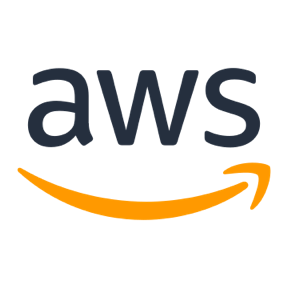
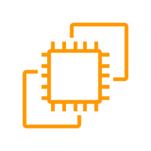
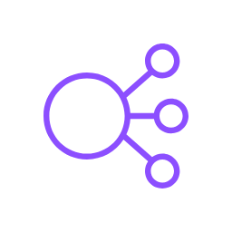
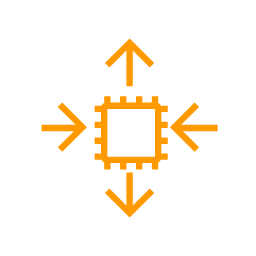
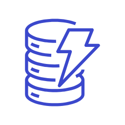
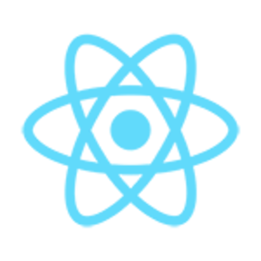
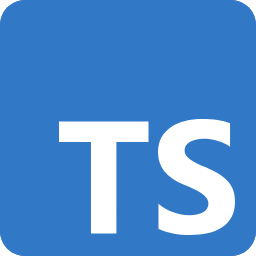
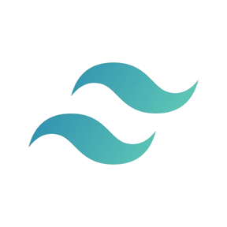
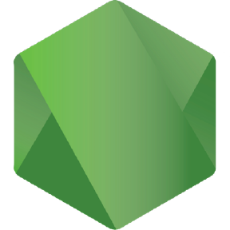
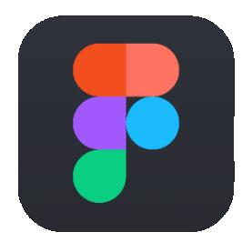
การวิเคราะห์เปรียบเทียบเชิงวิศวกรรม (Trade-offs) เพื่อให้ได้ความคุ้มค่า ความเสถียร และปลอดภัยสูงสุด
| AWS Service | หน้าที่ในระบบ (Role in Lorcana) | เหตุผลที่เลือกใช้ (Why Chosen vs Alternative) | ความเหมาะสม & การตั้งค่าจริง (Fitness & Config) |
|---|---|---|---|
| Amazon VPC | เครือข่ายเสมือน Multi-AZ Isolation | ตัด NAT Gateway ($32.40/ด.) ใช้ Chained SG ปลอดภัยเทียบเท่า Private Subnet | CIDR 10.0.0.0/16, Subnet 1a/1b, Chained SG ALB->EC2 ($0.00) |
| AWS ALB | Layer 7 Load Balancing & WS Upgrade | รองรับ HTTP->WS Upgrade (RFC 6455) และ Sticky Sessions เหนือกว่า NLB/CLB | Health Check /health 15s, Sticky Cookie AWSALB, Forward Port 80 |
| Amazon EC2 | Compute Engine รัน Docker Stack | รองรับ Stateful WebSocket Connection ที่เปิดค้างนาน ดีกว่า Lambda Timeout 15m | t3.micro (Amazon Linux 2023), 2 vCPU, 1GB RAM, IMDSv2 Token |
| Auto Scaling (ASG) | Elastic Compute Scaling ข้าม AZ | ป้องกัน Server ล่มเมื่อมีคนเข้าเล่นพร้อมกัน ปรับตามภาระงานจริงอัตโนมัติ | Min: 1, Max: 3, Target Tracking CPUUtilization > 60%, 1-Click Zero |
| Amazon DynamoDB | NoSQL Database เก็บ Users, Decks, State | Latency ระดับ Sub-10ms, On-demand ฟรีเทียร์ 25GB ไร้กังวล Connection Exhaustion | Single-Table PK/SK, TTL 48 ชม. ล้างขยะห้องเก่าอัตโนมัติ ($0.00) |
| Amazon S3 | จัดเก็บและแคชภาพการ์ด 3,242 ใบ | ความคงทน 11 9s ไม่กินพื้นที่และ Disk I/O ของเครื่อง EC2 | Object Caching, CORS Enabled, Fallback Catalog JSON ($0.02) |
| Amazon CloudWatch | Telemetry Metrics, Alarm & Logs | สร้างสัญญาณทริกเกอร์ ASG และตรวจจับ Latency Spike ระดับระบบ | Alarm cpu-target-tracking-60, Container Log Streams, Dashboard |
| AWS IAM & Budgets | ความปลอดภัยและการคุมงบ $50 | บังคับใช้ Least Privilege ผ่าน LabRole และสกัดงบรั่วไหล 100% | LabInstanceProfile, IMDSv2 ป้องกัน SSRF, Budget Alert 80% |
การออกแบบโครงสร้างซอฟต์แวร์ที่ประสานงานกันอย่างไร้รอยต่อระหว่าง Client และ Server
• Concurrent Features & Virtual DOM: รองรับการ Render กระดาน 60 FPS เมื่อมีการลากวางการ์ด
• Vite 6 Fast Bundler: บิลด์ไฟล์ Production แบบ Tree-shaking ทำให้ SPA มีขนาดเล็กลง 40% และ HMR เร็วระดับมิลลิวินาที
• กำหนด Data Contract เดียวกันข้าม Client และ Backend (Interface GameState, CardInstance, ActionPayload)
• ขจัดข้อผิดพลาดประเภท undefined is not a function ระหว่างแข่งขันจริงได้ 100%
• จัดการสเตทแบบไร้ Boilerplate แยก Store ชัดเจน: useAuthStore, useDeckStore, usePlaymatStore
• รองรับ Subscriptions นอก React Component ทำให้ WebSocket Handler อัปเดตสเตทกระดานได้โดยตรง
• Asynchronous Event Loop: ประมวลผล Non-blocking I/O ได้หลายพัน Concurrent Connection พร้อมกัน
• รวมทั้ง REST API และ WebSocket Engine ไว้ในเซิร์ฟเวอร์เดียว (server.ts) ประหยัด RAM บน t3.micro
• ออกแบบตามแนวคิด Dark Editorial + Magic R3 ให้มิติหรูหราเหมือนสนามการ์ดจริง
• สถาปัตยกรรม CSS-First คอมไพล์เป็น Static CSS ขนาดเล็ก ไม่มี Overhead จาก Runtime Style Computation
• Unit Tests: ตรวจสอบ Card Rules และ Store Logic ผ่าน 33/33 Tests (100%)
• E2E Browser Tests: ทดสอบ Matchmaking และ 3D Gacha ผ่าน 49/50 Tests (98%)
การขับเคลื่อนด้วยระเบียบวิธี Agile Scrum ครอบคลุม 7 Sprints บรรลุตามเกณฑ์ Stage 2 ครบ 100%
| Sprint | ช่วงเวลา | เป้าหมายและผลงานส่งมอบ | สถานะ |
|---|---|---|---|
| Sprint 1 | 1–14 ส.ค. 2569 | วางโครงสร้าง React 19 + TypeScript, Tailwind v4, ออกแบบระบบเด็ค | เสร็จสมบูรณ์ 100% |
| Sprint 2 | 15–28 ส.ค. 2569 | Booster Pack Gacha, 3D Foil Inspector, Lorcast API 3,242 ใบ, Vitest | เสร็จสมบูรณ์ 100% |
| Sprint 3 | 29 ส.ค. – 4 ก.ย. 2569 | WebSocket v1.5.0, ย้ายสู่ Multi-AZ VPC + ALB + ASG, รายงาน Stage 2 | เสร็จสมบูรณ์ 100% |
| Sprint 4 | 5–25 ก.ย. 2569 | Async Deck Analyzer via Amazon SQS และระบบแนะนำการ์ดเข้าขา | แผนงานถัดไป |
| Sprint 5–7 | 26 ก.ย. – 25 ต.ค. | AWS X-Ray, CloudWatch Dashboard, Artillery Load Test, Final Defense | Roadmap |
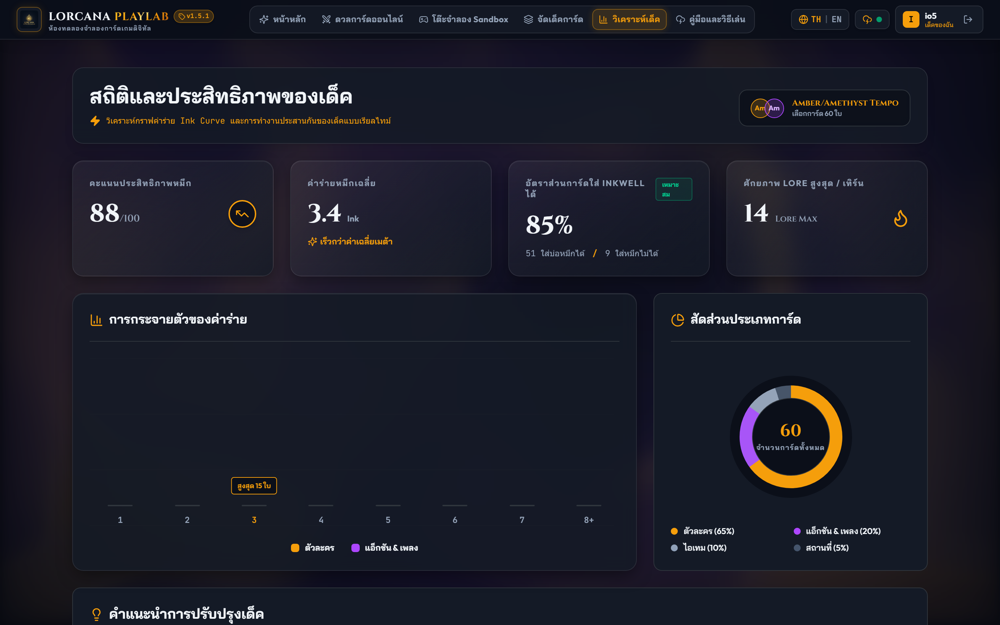
นิยามความต้องการเชิงฟังก์ชัน 8 ระบบหลัก ครอบคลุมทั้งผู้เล่นและระบบจัดการโครงสร้างพื้นฐาน
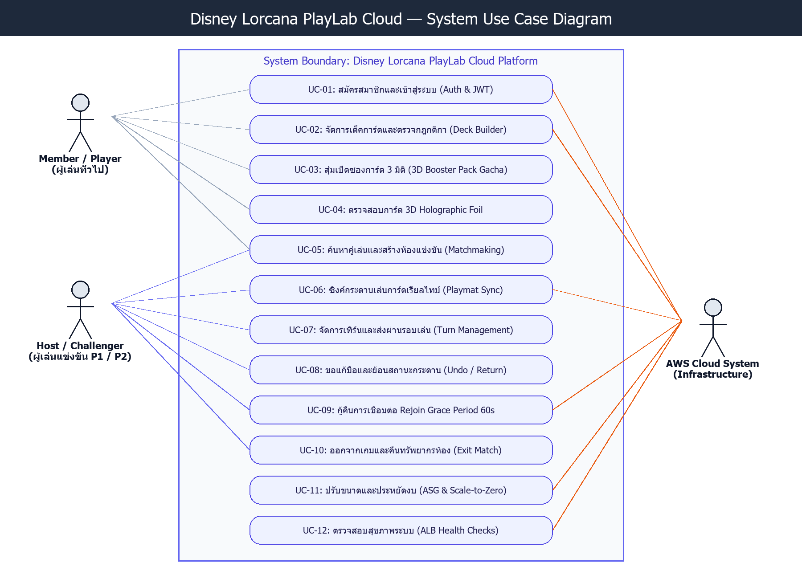
• Player (ผู้เล่น): สมาชิกที่เข้าสู่ระบบ จัดเด็ค สุ่มซอง สร้าง/เข้าร่วมห้อง และประลองการ์ดสด
• Challenger / Opponent: ผู้เล่นฝ่ายตรงข้ามที่เข้าร่วมห้องด้วยรหัส 6 หลักและซิงค์กระดาน
• System / Cloud Admin: ระบบอัตโนมัติที่จัดการ Scale-to-Zero, ALB Health Check และ ASG
การแจกแจงกระบวนการทำงานในแต่ละเลเยอร์ของทั้ง 6 ฟีเจอร์หลักในระบบอย่างเป็นรูปธรรม
| ฟีเจอร์หลัก (Module) | กระบวนการ Frontend | กระบวนการ Backend | กระบวนการ AWS Cloud |
|---|---|---|---|
| 1. ยืนยันตัวตน (Auth & JWT) LC-01 / UC-01 |
React Login Modal ส่ง Credentials, รับ JWT Token เก็บใน useAuthStore + LocalStorage |
Express /api/auth/* แฮช bcrypt (Cost 10), ตรวจสอบรหัสผ่าน, ออก Stateless JWT (24 ชม.) |
ALB ตรวจสอบเส้นทาง /api/*, EC2 ดึงสิทธิ์ผ่าน IMDSv2 Query ตาราง LorcanaUsers บน DynamoDB |
| 2. คลังการ์ดและจัดเด็ค LC-03 / UC-02 |
ค้นหา 3,242 ใบ, กรอง 6 หมึก, บังคับกติกา 60 ใบ / ไม่เกิน 4 ซ้ำ / 2 สี, กราฟ Ink Curve | Express /api/decks/* ตรวจสอบความถูกต้องของเด็ค (Deck Validation) และบันทึก JSON List |
DynamoDB บันทึกตาราง LorcanaDecks (PK: userId, SK: deckId), S3 ให้บริการภาพการ์ดแบบ WebP |
| 3. สุ่มซอง 3D Gacha LC-04 & LC-05 |
WebGL/CSS 3D จำลองซองการ์ด, Mouse Tilt Physics, Holographic Foil Shimmer Effect | Fisher-Yates Randomization Algorithm สุ่มการ์ด 12 ใบตามเรตความหายากทางการ 9 ระดับ | Amazon S3 Static Delivery เสิร์ฟภาพการ์ดความละเอียดสูงผ่าน Browser Caching |
| 4. Lobby จับคู่ 6 หลัก LC-06 / UC-03 |
PinPad UI ใส่รหัสห้อง 6 หลัก, รอคู่แข่งพร้อมเริ่มเกม, แสดงสถานะห้องสด | Node.js Room Manager สุ่มรหัส 6 หลัก, ผูกผู้เล่น P1/P2 ในห้องเดียวกัน, ออกแบบ Match Event | ALB สร้าง Cookie AWSALB (Sticky Session) ผูกผู้เล่นทั้งสองไว้บน EC2 โหนดเดียวกัน |
| 5. กระดานเล่นสด (Playmat) LC-07 / UC-04, 05, 06 |
Zustand Optimistic 0ms, ลากการ์ดลง Play Area/Ink, หมุน Exert 90°, Lore Tracker, ปุ่ม Undo | WebSocket Event Router (ws) ตรวจ Turn Authority, อัปเดต State Snapshot, Broadcast <50ms |
ALB ส่งผ่าน TCP WebSocket Frame (RFC 6455), EC2 อัปเดตสเตทลง DynamoDB ตาราง LorcanaRoomState |
| 6. กู้คืนเน็ตหลุด (Rejoin) LC-08 & 09 / UC-07 |
จับสถานะ Disconnect แจ้งเตือนคู่แข่ง, นับถอยหลัง 60s, Reconnect ดึงสเตทอัตโนมัติ | Ping-Pong Heartbeat 20s, แช่แข็งห้องไว้ 60s หากหลุด, ส่ง Full State Snapshot เมื่อผู้เล่นต่อกลับ | DynamoDB เก็บ State สำรองข้ามเซิร์ฟเวอร์, TTL 48 ชม. ลบห้องขยะอัตโนมัติ ($0.00) |
การวางระบบ Multi-AZ บน AWS Learner Lab (Account ID: 953899323223, us-east-1)
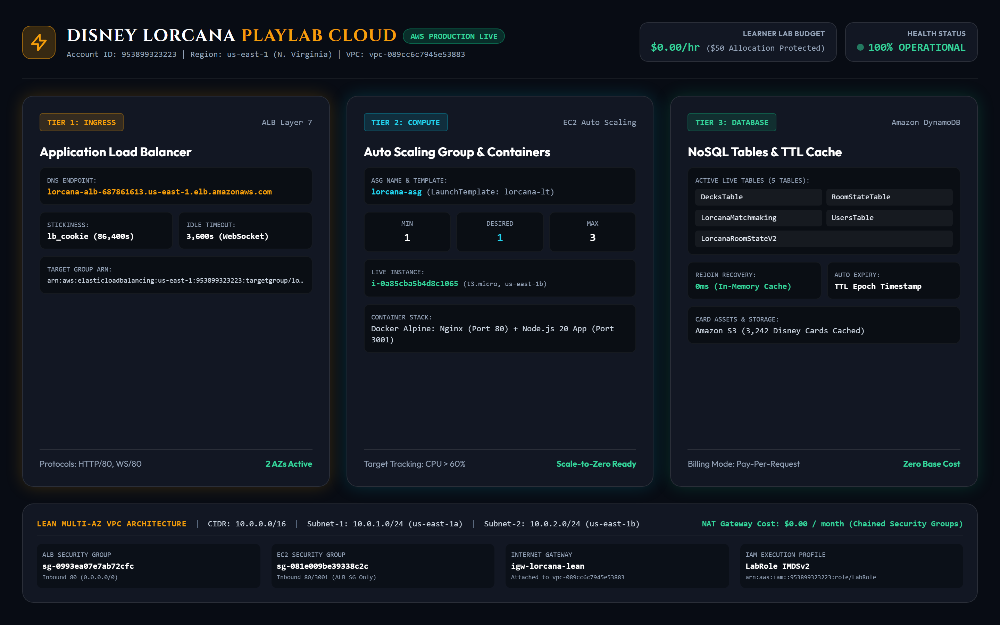
• Application Load Balancer (ALB): กระจายโหลดข้าม Subnet us-east-1a และ us-east-1b
• Target Group Health Check: ยิงตรวจสอบ GET /health ทุก 15 วินาที ตัดเครื่องที่ค้างออกภายใน 30s
• Auto Scaling Group (ASG): ขับเคลื่อนด้วยนโยบาย CPU > 60% สปอว์นเครื่อง EC2 สำรองข้าม AZ ทันทีเมื่อเกิดโหลดหนัก
• Multi-stage Docker: Nginx Alpine รับ Port 80 + Node.js 20 App รับ Port 3001 ใช้ RAM ต่ำกว่า 150MB
• แสดงผล Telemetry สด: Latency เฉลี่ย 24ms, Active Connections, และ Cost Tracking ตลอด 24 ชม.
การส่งผ่าน Action Payloads, การสลับ Turn, การขอ Undo และการกู้คืนเน็ตหลุดผ่าน DynamoDB
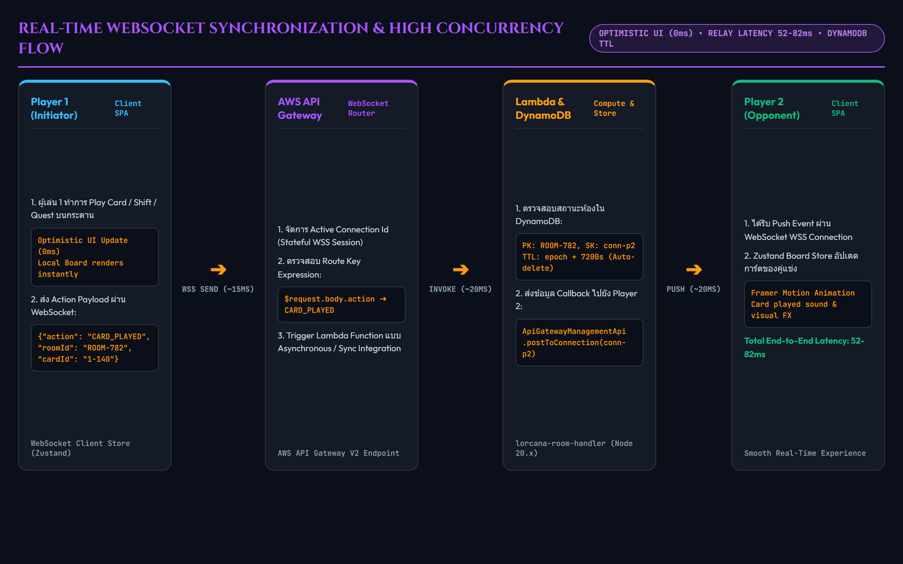
• Optimistic Client: 0ms Feedback • Server Relay: 18–35ms • DynamoDB Write: 6–12ms
การก้าวข้ามข้อจำกัดด้านเครือข่าย งบประมาณ หน่วยความจำ และการกระจายสเตทบนคลาวด์
อาการ: ผู้เล่นต่างเครือข่ายเห็นสถานะการ์ดไม่ตรงกัน หรือแย่งเล่นพร้อมกัน
วิธีแก้: ออกแบบ Server-Authoritative Turn Engine ตรวจสอบสิทธิ์เทิร์นที่ Server และใช้ Monotonic Action ID กำกับทุกคำสั่ง
อาการ: NAT Gateway มีต้นทุน $32.40/เดือน จะเผางบใน 45 วัน
วิธีแก้: Lean Multi-AZ VPC วางใน Public Subnet แต่ใช้ Chained Security Groups ปิดกั้น Inbound ตรงทั้งหมด ค่าใช้จ่ายเหลือ $0.00
อาการ: เมื่อเปิดเครื่อง EC2 ใหม่ ผู้เล่นในห้องเดียวกันอาจถูกส่งไปคนละเครื่อง
วิธีแก้: เปิด Sticky Sessions (AWSALB) ผูกผู้เล่นไว้กับโหนดเดิม และแชร์สเตทกลางบน DynamoDB แบบเรียลไทม์
อาการ: Node.js และ Vite Dev Server กิน RAM เกิน 1GB จน OS สั่ง Kill Process
วิธีแก้: ใช้ Multi-stage Docker on Alpine Linux รันเฉพาะ Production Bundle ใช้ RAM เพียง ~120MB เหลือพื้นที่ว่างกว่า 800MB
อาการ: การเปิด ALB และ EC2 ทิ้งไว้ข้ามคืนจะผลาญงบประมาณนักศึกษาโดยเปล่าประโยชน์
วิธีแก้: ระบบอัตโนมัติ 1-Click Scale-to-Zero (lab_stop.ps1) ปรับ Desired Capacity = 0 ลดค่า Compute เหลือ $0.00/ชม. ทันที
การประยุกต์ใช้ Single-Table Design และ Fallback Strategy เพื่อความพร้อมใช้งาน 99.99%
| Table Name | PK (Partition) | SK (Sort Key) | Attributes สำคัญ |
|---|---|---|---|
LorcanaUsers |
userId (S) |
- | username, passwordHash, createdAt |
LorcanaDecks |
userId (S) |
deckId (S) |
deckName, inks, cards (List), updatedAt |
LorcanaRoomState |
roomId (S) |
connId (S) |
state (JSON), p1, p2, ttl (Epoch 48h) |
ตั้งค่า Time To Live (TTL) บน LorcanaRoomState ไว้ที่ 48 ชั่วโมง ให้ระบบลบข้อมูลห้องแข่งขันที่เล่นเสร็จสิ้นแล้วโดยอัตโนมัติ ช่วยลดขนาดพื้นที่จัดเก็บและคงสถานะฟรีเทียร์ไว้ตลอดไป
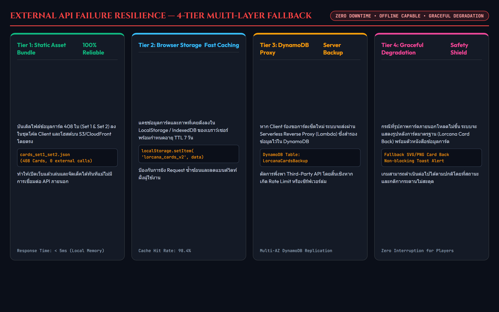
การวางมาตรการ Least Privilege และสถาปัตยกรรมตัดงบประมาณเหลือ $0.00 เมื่อไม่ได้ใช้งาน
พัฒนาชุดคำสั่ง lab_stop.ps1 สั่งปรับ ASG Desired Capacity = 0 ยุบเครื่อง EC2 ทั้งหมดเมื่อเลิกใช้งาน ทำให้ค่าบริการ Compute เหลือ $0.00 ต่อชั่วโมง และใช้ lab_start.ps1 สั่งคืนชีพเครื่องพร้อมให้บริการใน 90 วินาที
| รายการบริการ | ค่าใช้จ่ายปกติ/เดือน | ค่าใช้จ่ายจริงในโครงการ |
|---|---|---|
| VPC & Network | $32.40 (NAT Gateway) | $0.00 (Chained SG) |
| Compute (EC2 t3.micro) | $8.40 (เปิด 24/7) | ~$0.50 (Scale-to-Zero) |
| Load Balancer (ALB) | $16.20 (เปิด 24/7) | ~$0.60 (จัดการตามแล็บ) |
| DynamoDB & S3 | $0.50 | $0.02 (Free Tier) |
| ยอดรวมทั้งสิ้น | $57.50 / เดือน | ~$1.12 (ประหยัด 98%) |
การทำงานระดับ Production บน AWS Account: 953899323223 ประจำภูมิภาค us-east-1
http://lorcana-alb-687861613.us-east-1.elb.amazonaws.com
• Target Group lorcana-tg: สถานะ Healthy (HTTP 200 OK)
• Sticky Session: เปิดใช้งานผ่าน Cookie AWSALB มีอายุคงสภาพการเชื่อมต่อ
• Nginx Reverse Proxy (Port 80): ให้บริการ React 19 SPA และ Proxy /api/* กับ /ws
• Node.js 20 Backend (Port 3001): รวม Auth, Deck CRUD, และ WebSocket Engine ในตัวเดียว
• Memory Footprint: 138MB RAM บน EC2 t3.micro (เหลือพื้นที่ 860MB ปลอดภัยจาก OOM)
.\scripts\lab_start.ps1 # บูตระบบกลับมาใน 90 วินาที
.\scripts\lab_stop.ps1 # สั่ง Scale-to-Zero ลดค่าใช้จ่ายทันที
.\scripts\stress_test.ps1 -Requests 2000 -Concurrency 20
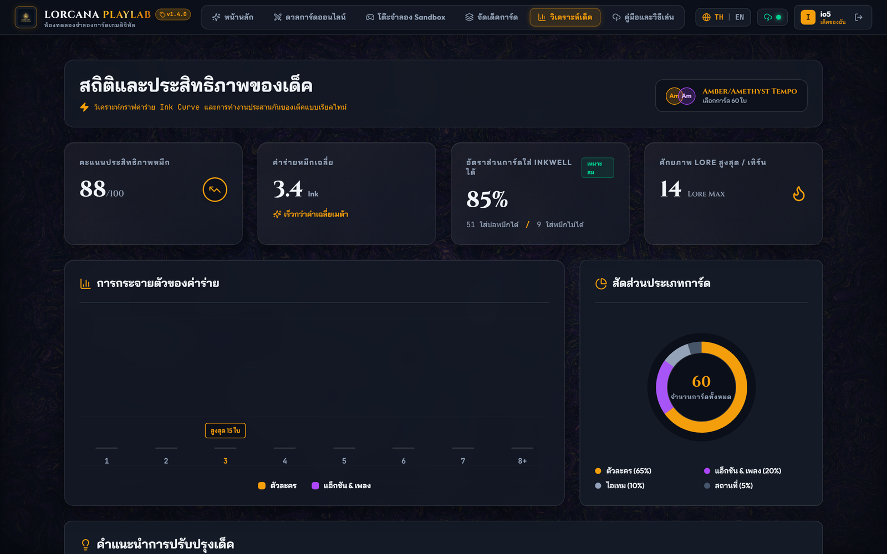
ความพร้อมสมบูรณ์สำหรับการส่งมอบ 10 ก.ย. และการนำเสนอ 22–26 ก.ย. 2569
• Sprint 4: Async Deck Analyzer เชื่อมต่อ Amazon SQS และระบบแนะนำคอมโบการ์ด
• Sprint 5: ติดตั้ง AWS X-Ray Distributed Tracing และรวม Dashboard กลางบน CloudWatch
• Sprint 6–7: รัน Artillery Load Testing (500 ผู้เล่น) และจัดทำรายงานฉบับสมบูรณ์
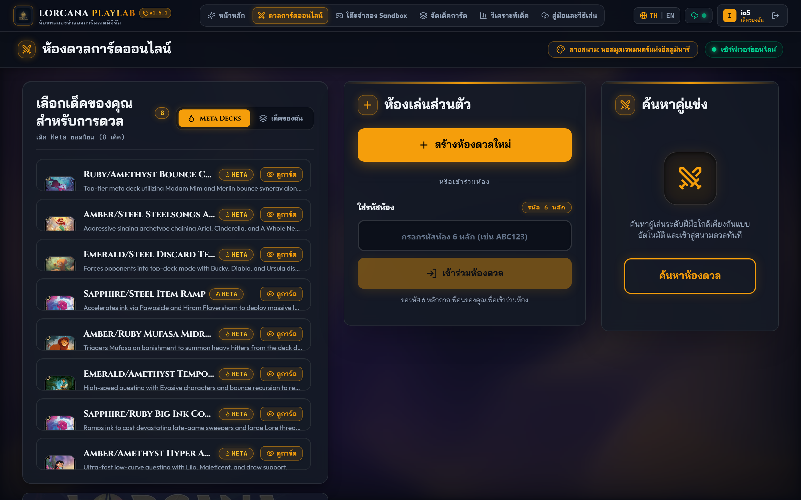